A QR Code generator built from reusable JavaBeans components
| Submission detail | Information |
|---|---|
| Student name | [STUDENT NAME] |
| Registration number | [REGISTRATION NUMBER] |
| Lecturer | Dr. Bernard Ondara, Ph.D. |
| Institution | Kenyatta University — Department of Computing |
| Unit | SCO 310 / SIT 300 — Component Programming |
| Submission date | [DATE] |
QR Component Studio accepts text, creates a QR Code, displays it and saves the generated file. The same window also shows the selected output format, recent history and details about the generated symbol.
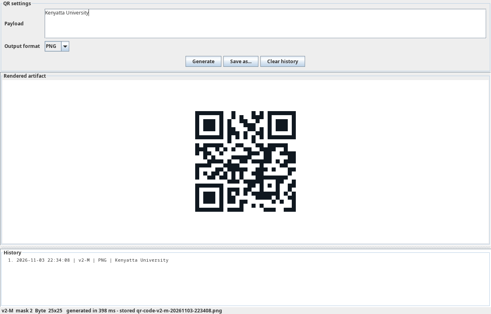
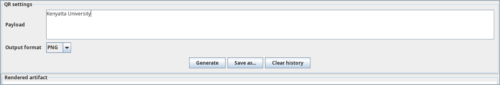
The payload box contains the text to be encoded. The output selector chooses the renderer used for
the result. When Generate is clicked, the text is passed to QrStudioFacadeBean, which starts the
generation process.
The encoder creates the QR matrix and the selected renderer turns it into the requested output. The result is displayed in the preview area.
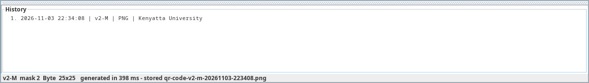
After generation, the history area records the operation. The status line shows the QR version, error-correction level, mask, generation time and saved filename.
The application uses separate renderer components. Changing the format does not change the encoder, history or file-storage components.
The PNG result is shown in Section 1. It is produced by PngRendererBean using the configured module
size, quiet zone and colours.
SvgRendererBean creates vector output from the same QR matrix. The image remains clear when it is
resized.
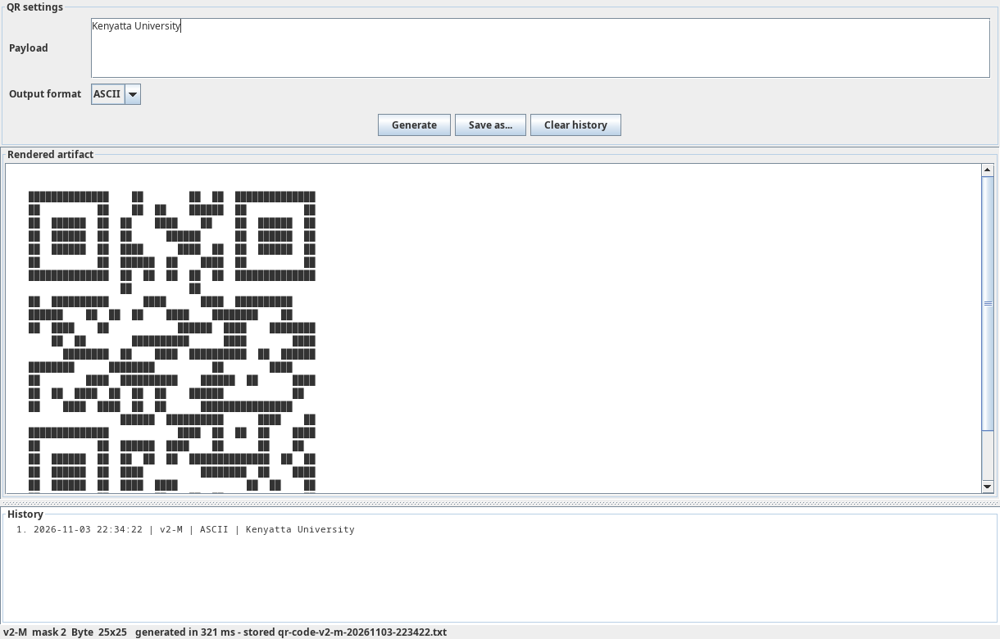
AsciiRendererBean changes the dark and light modules into text characters. The application shows
the result in a scrollable text area.
The project also contains RoundedModuleRendererBean for rounded PNG output and
PdfRendererBean for vector PDF output. Both implement the same QrCodeRenderer interface.
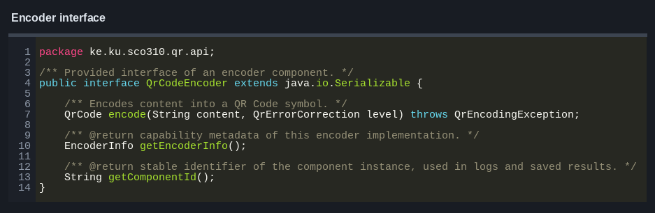
QrCodeEncoder defines the method used to encode text. The built-in encoder and the optional ZXing
encoder both implement this interface.
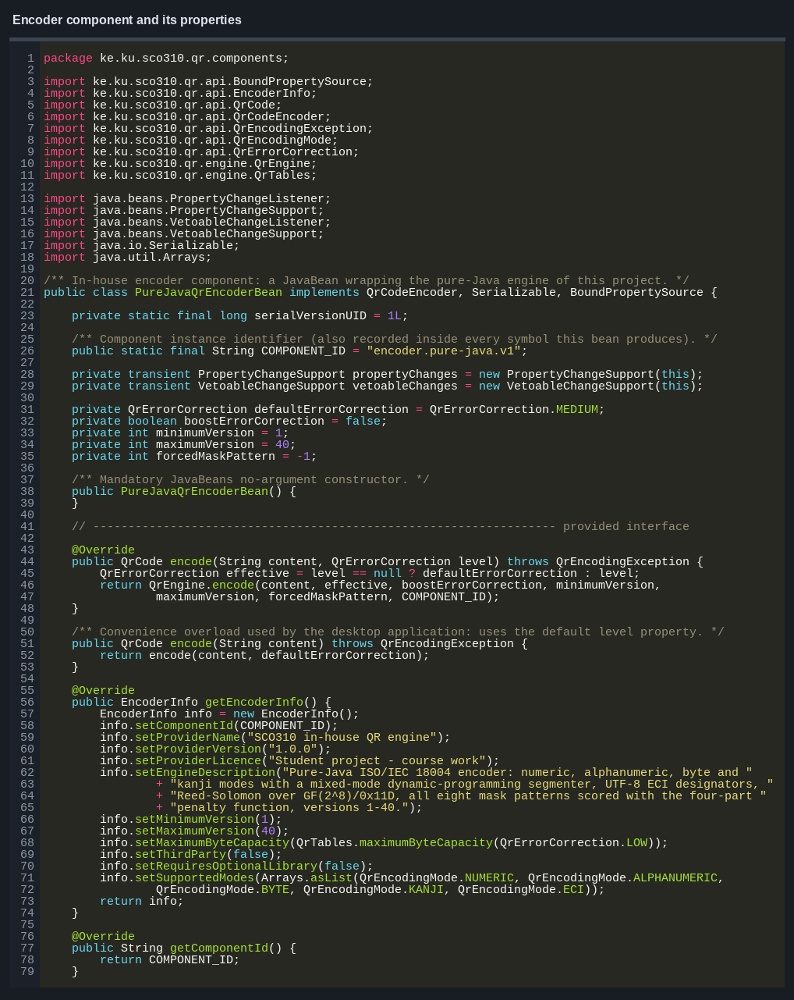
PureJavaQrEncoderBean stores the encoder settings and passes the work to the QR engine. Its main
properties include the default error-correction level, minimum version, maximum version and forced
mask.
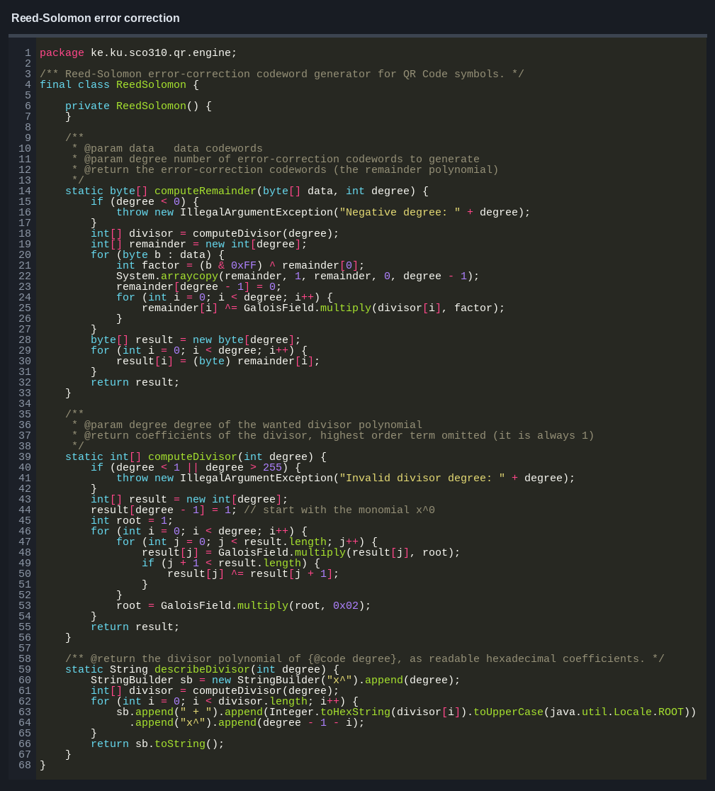
ReedSolomon creates the error-correction codewords. These codewords allow a damaged QR Code to
remain readable within the limit of its selected error-correction level.
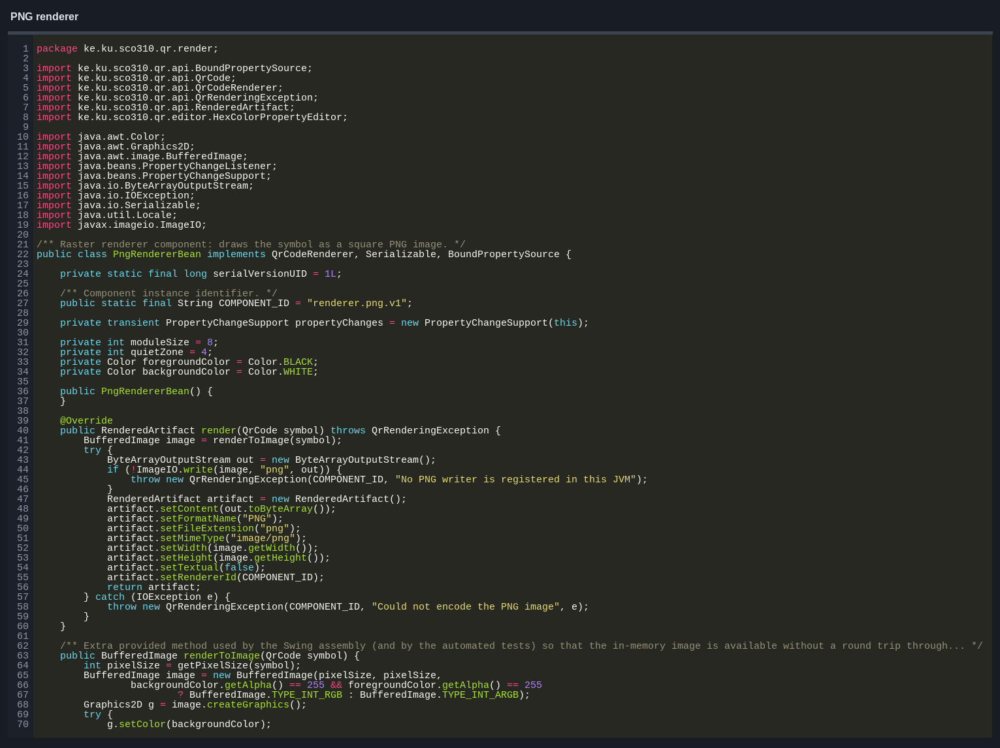
PngRendererBean creates the image, paints the background and draws every dark QR module. The final
image is returned as a RenderedArtifact.
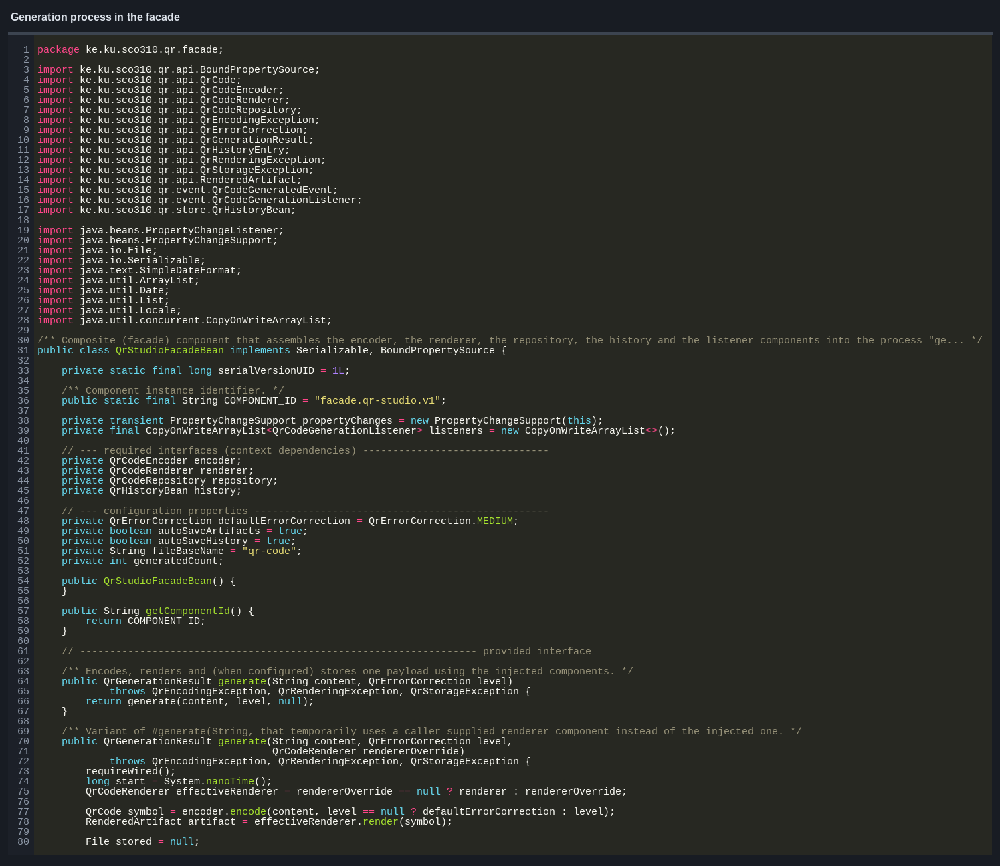
QrStudioFacadeBean controls the main process:
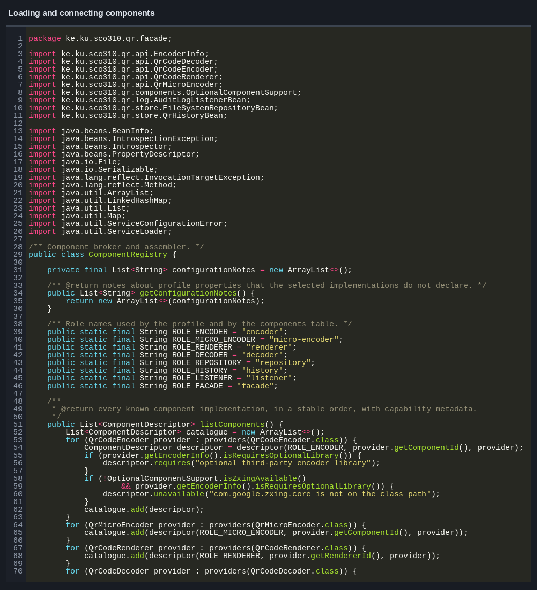
ComponentRegistry loads the selected components, applies their property values and checks that the
required connections are available.
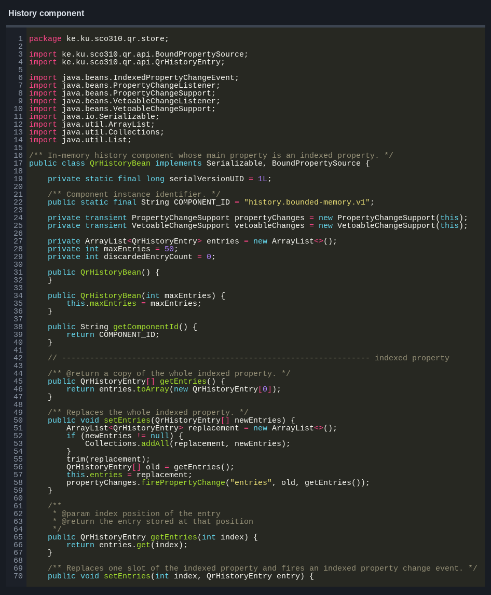
QrHistoryBean stores recent generation records. Its maximum size can be changed, and older entries
are removed when the limit is reached.
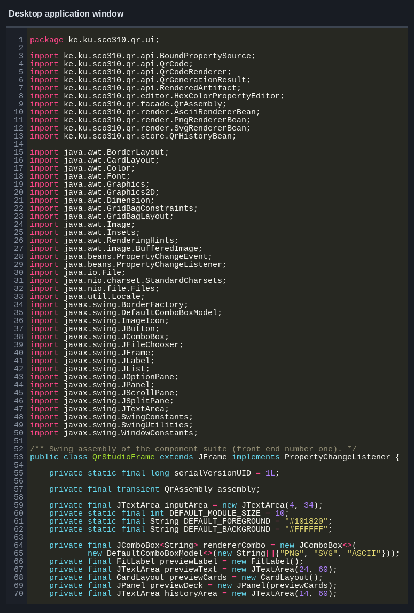
QrStudioFrame reads the user input, calls the facade and displays the returned result. The QR
encoding algorithm is kept outside the window class.
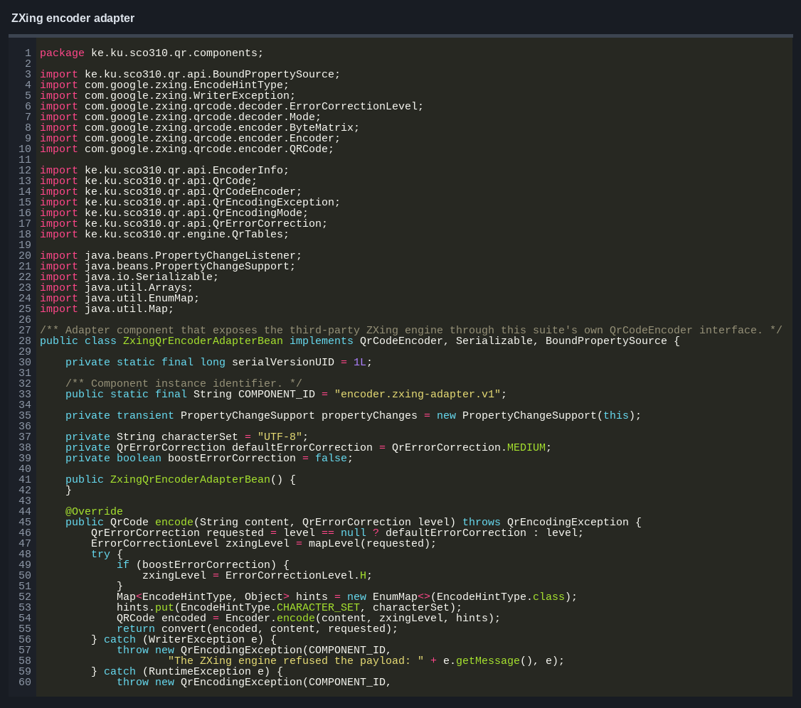
ZxingQrEncoderAdapterBean allows ZXing to be used through the same QrCodeEncoder interface. The
rest of the application does not need to know which encoder is connected.
| Role | Component | Main work |
|---|---|---|
| Encoder | PureJavaQrEncoderBean |
creates standard QR Codes |
| Encoder | ZxingQrEncoderAdapterBean |
uses the optional ZXing encoder |
| Micro QR encoder | MicroQrEncoderBean |
creates Micro QR M1–M4 symbols |
| Decoder | PureJavaQrDecoderBean |
reads supported QR matrices and generated files |
| Decoder | ZxingQrDecoderAdapterBean |
uses ZXing for decoding |
| Renderer | PngRendererBean |
creates PNG images |
| Renderer | SvgRendererBean |
creates SVG files |
| Renderer | AsciiRendererBean |
creates text output |
| Renderer | RoundedModuleRendererBean |
creates rounded PNG images |
| Renderer | PdfRendererBean |
creates PDF files |
| Repository | FileSystemRepositoryBean |
saves files and stored history |
| History | QrHistoryBean |
keeps recent generation records |
| Listener | AuditLogListenerBean |
records generation events |
| Facade | QrStudioFacadeBean |
controls the generation process |
The components use public no-argument constructors and getter/setter methods. Bound properties send
change events when their values are updated. Constrained properties can reject invalid values.
QrHistoryBean also provides indexed access to individual history entries.
PngRendererBeanBeanInfo and QrHistoryBeanBeanInfo provide extra information about the bean
properties. HexColorPropertyEditor changes hexadecimal colour text into Java Color objects.
The built-in encoder follows these steps:
Numeric, alphanumeric, byte, Kanji, UTF-8 ECI and mixed-mode content are supported. Standard QR versions 1–40 and error-correction levels L, M, Q and H are available. Micro QR M1–M4 is handled by a separate encoder component.
config/assembly.xml stores the selected components and their property values. AssemblyProfile
loads this file, while ComponentRegistry creates and connects the components.
FileSystemRepositoryBean saves generated files in the configured folder. It also stores the
history so that previous records can be loaded again. AssemblyGraphBean supports saving and
restoring the connected bean objects through XMLEncoder and XMLDecoder.
The project includes checks for encoding, decoding, renderers, component properties, history, configuration and saved files. The tests also use ZXing to decode generated symbols and compare the result with the original text.
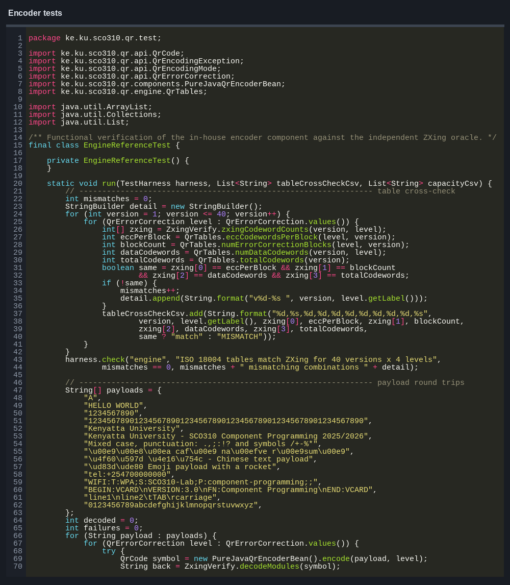
The latest full test run completed successfully. Invalid component names, missing connections and corrupted files are also tested to make sure errors are detected.
The first multi-block version placed some data and error-correction codewords in the wrong order. The interleaving step was corrected and checked with larger QR versions.
Large QR Codes could be cut off in the desktop window. The preview layout was changed so the result can fit or scroll correctly.
The history entries were first shown as a normal property. IndexedPropertyDescriptor was added so
individual entries can be discovered and accessed correctly.
The application now checks whether ZXing is available before selecting its adapter. If it is not available, the built-in encoder remains selected.
QR Component Studio generates QR Codes through separate encoder, renderer, storage, history and listener components. These parts are connected through shared interfaces, which allows an encoder or renderer to be changed without changing the rest of the application.
The desktop application generates PNG, SVG and text output, saves the result and records recent operations. The built-in QR engine handles the complete generation process, while the optional ZXing adapter provides another encoder using the same interface.
java.beans API documentation.